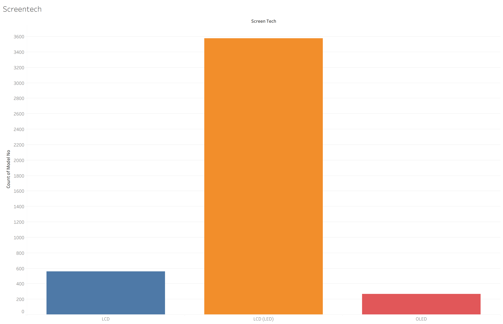
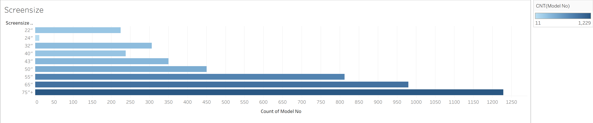
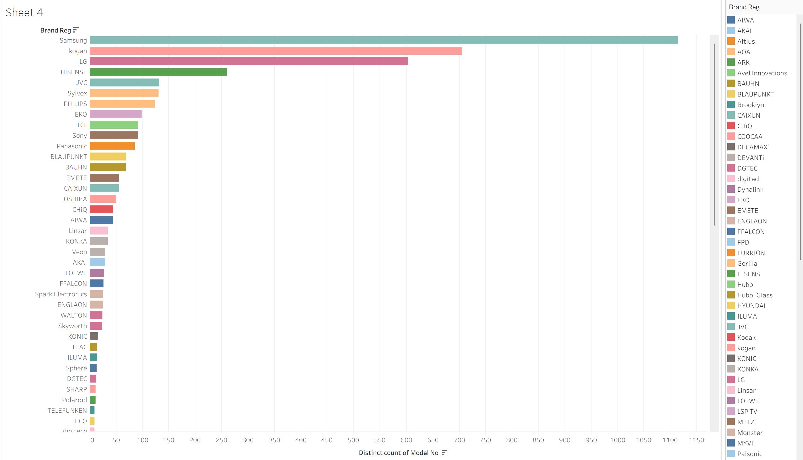

Television Market Overview in Australia
This page explores the Australian television market using data from registered TV products available for sale in Australia. The visualisations below provide a high-level overview of screen technologies, screen sizes, and brand presence to help readers understand current market trends.
Screen Technologies Available
Different television models use different screen technologies, such as LED, LCD, OLED, and Plasma. The chart below shows how frequently each technology appears in the Australian market. This helps identify which technologies dominate and which are less common.

Insight: LED televisions account for the largest share of available models, indicating that this technology is currently the most widespread in Australia.
Screen Sizes on the Market
Television screen sizes are typically advertised in inches and are an important factor for consumers when choosing a TV. The following chart groups televisions into common advertised screen size categories to show which sizes are most widely available.

Insight: Medium to large screen sizes are the most common,especially TVs with 75+ in inches screensize, suggesting that consumer demand has shifted toward larger televisions.
Brands with the Most TV Models
Not all brands offer the same range of television models. The chart below compares brands based on the number of distinct TV models they have registered for sale in Australia, highlighting market dominance and product diversity.

Insight: A small number of major brands offer a significantly larger range of models, indicating strong market presence and competition among leading manufacturers.
What This Tells Us
Together, these visualisations show that the Australian television market is dominated by a small number of screen technologies, popular mid-to-large screen sizes, and a few major brands. This overview helps consumers, students, and analysts better understand how the TV market is structured.